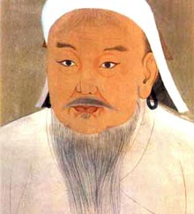

Cengiz [Timuçin] (1155-1227)

Moðol Ýmparatorluðunun kurucusu ve ilk hükümdarýdýr. Asýl adý Timuçin'dir. Tarihin kaydettiði en zalim hükümdar ve kan dökücülerden biridir. Ünlü tarihçi Ýbnü'l-Esir, onun yaptýklarý için, "Keþke annem beni doðurmasaydý da tüyler ürpertici zulüm ve katliamlarý görmeseydim" ifadelerine yer verir. Risale-i Nur'da kendisinden, ayet ve hadislerin iþaretiyle "deccal" olarak söz edilip, Müslümanlar arasýnda hükmedecek üç deccalden biri olarak tarif edilmektedir. Kan üzerine kurduðu büyük imparatorluðu, ölümünden hemen sonra parçalandý.Timuçin, 1155 yýlýnda Sibirya bölgesindeki Onon nehri kýyýsýnda bulunan Deliün Boldok'da doðdu. Babasý Yesügay Bahadýr, annesi Houlen Ece'dir. Henüz on iki yaþýnda iken babasýný kaybetti. Bundan sonra uzun süren sýkýntýlý olaylarý arka arkaya yaþadý. Önce babasýna tabi olan kabileler tarafýndan terk edildiler. Diðer taraftan baskýlara maruz kaldýlar. Niþanlýsý esir alýnarak Ong Han'a hediye edildi. Aile balýkçýlýk ve avcýlýk yaparak geçimini saðladý.
On üçüncü asrýn baþýndan itibaren toparlanan ve etrafýna önemli kuvvetler toplayan Timuçin, düþmanlarý ile yaptýðý savaþlarý kazanmaya ve giderek güçlenmeye baþladý. Karakurum'da ilk Moðol devletini kurdu (1205). Cahil ve vahþi Moðol ve Tatarlardan, iþi gücü yaðmacýlýk olan büyük bir ordu meydana getirdi. Moðolistan'ýn etrafýndaki ülkelere saldýrmaya baþladý. 1206 yýlýnda; cihan hükümdarý, güçlü, mükemmel savaþçý anlamýna gelen "Cengiz" unvanýný aldý ve kaðan ilan edildi. Tüm bozkýr kavimlerini egemenliði altýnda topladý. Topraklarýný geniþleterek Müslümanlarýn yaþadýðý alanlara saldýrmaya baþladý.
Cengiz, 1219 yýlýnda Harzemþahlar Devleti'ne saldýrdý. Buhara'yý 1220 yýlýnda kuþattý ve üç gün sonra ele geçirdi. Bununla beraber, Semerkand, Otrar ve Merv gibi önemli þehirler kuþatýlarak ele geçirdi. Buhara, Semerkand, Herat ve diðer merkezler birer kültür, sanat ve medeniyet abidesi idiler. Buralarý yaðmaladýktan sonra yakýp, yýktý. Teslim olmak istemeyen þehirlerde büyük katliamlar yaptý. Sadece Merv þehrinde; Ýbnü'l-Esir'e göre yedi yüz bin, Cüveyni'ye göre ise, bir milyon üç yüz binden fazla insaný katletti. Hatta intikam hýrsýyla Niþabur'da kedi ve köpekler bile katletti. Uzun süre Moðol ordusu tarafýndan kuþatýldýðý halde alýnamayan Gürgenç etrafýndaki hendekler doldurularak þehir ateþe verildi. Burasýný ele geçirdikten sonra, zenaatkarlar hariç, halkýn tamamý katledildi. Uzun süren kuþatma ve iþgalden sonra Harzemþahlarýn topraklarý viraneye döndü.
Cengiz, çok geniþ bir alaný iþgal ve yaðmaladýktan sonra 1225 yýlýnda Moðolistan'daki karargahýna döndü. Hastalanýnca oðullarýný toplayarak vasiyette bulundu. Bu vasiyete göre; kendisinden sonra Ögedey kaðan olacak, Çaðatay yasa iþlerinden sorumlu olacak, Tuluy'da ordu kumandanlýðýný yapacaktý. 1227 yýlýnda öldü ve Moðolistan'ýn kuzeydoðusundaki Burhan Haldun denilen yere gömüldü.
Cengiz, Kore'den Yakýndoðu'ya, Güney Avrupa, Güney Sibirya'dan Çin Hindi'ne kadar uzanan çok geniþ bir imparatorluðu miras býraktý. Zaferi, tamamen silah gücüne dayandý. Ömür boyu diðer kültürlere yabancý kalarak, sadece ve sadece kendisi ve yakýnlarý için çalýþtý. Devlet teþkilatýna Moðol geleneðini hakim kýldý. Ýlkel prensiplerle kurduðu büyük imparatorluðu ölümünden sonra uzun süre yaþamadý. Sadece kýrk yýl devam edebildi.
Kendisine karþý çýkanlarý çoluk-çocuk demeden öldürecek, kabile ve þehirleri tümden yok etmekten çekinmeyecek kadar kan dökücü bir yapýya sahipti. Kendisiyle çaðdaþ olan Ýbnü'l-Esir, Adem'den (as) o güne kadar insanlýðýn maruz kaldýðý en büyük felaketin Moðol istilasý olduðunu söylemiþtir. Ýstila ettiði Ýslam beldelerinde taþ üstünde taþ býrakmadý. Kadýn ve çocuklarý vahþice öldürdü. Camileri ahýr olarak kullandý. Cami, kütüphane ve medreseler yerle bir edildi.
Kýsa zamanda geniþ topraklara sahip olmasý ve büyük baþarýlarý elde etmesinin önemli sebepleri; disipline önem vermesi, süratli hareket ve amacýna ulaþmada gösterdiði acýmasýzlýktý. Halký ve idarecilerine ihanet edenleri anýnda cezalandýrmasý, buna karþýlýk yöneticilerine sadýk kalarak kendisine karþý mücadele edenleri himayesine almasý önemli vasýflarýndandý. Ýhanetle bir yeri teslim edip mükafat bekleyenleri, "kendi insanýna ihanet eden birisi, kim bilir bana nasýl ihanet eder" demek suretiyle anýnda kýlýçtan geçirirdi.
Risale-i Nur'un muhtelif yerlerinde Cengiz ile ilgili bilgiler ve iþaretler mevcuttur. Bu konu ile ilgili olarak hem ayet hem de hadislerin iþaretinden söz edilmektedir. Felak Suresi'nin icaz ve tefsiri üzerinde durulurken, bu surede geçen "min þerri" kelimesiyle Moðol fitnesine iþaret edildiði açýklanmaktadýr. Burada, Ýslam alemi için o zamana kadarki en dehþetli hadise olan Cengiz ve Hülagu fitnesine, Abbasi Halifeliðinin çöküþünün iþaretlerinin mevcudiyetine vurgu yapýlmaktadýr. (Þualar, II. Þua, s. 241) Ýbrahim Suresi birinci ayetinde de dehþetli olan altýncý asra yani Cengiz ve Hülagu fitnesine imalarýn olduðu belirtilmektedir. (Þualar, I. Þua, s. 620-621)
Müslümanlar arasýnda birden fazla deccalin zuhur edeceði ile ilgili Risaledeki bazý meselelere yapýlan itiraz ve bazý hocalarýn birden fazla deccalin olmasýna yaptýklarý itiraza cevap verilmektedir. Peygamber Efendimizin (asm), "Amcam Abbas'ýn soyundan hilafet devam edecek. Deccal o hilafeti tahrip edecek ve eline geçirecek" mealindeki Hadis-i Þerifini delil olarak göstermektedir. Burada, hadiste açýk bir þekilde "deccal" tabirinin kullanýldýðý ve Müslümanlar arasýnda zuhur edecek üç deccalin varlýðýndan söz edilmektedir.
Bu hadis ile gaybi olarak verilen haberin gerçekleþmesi, iþaret edilen Abbasi Halifeliðinin kurulmasý ve bu hilafeti yýkacak olan zalim, tahripçi Cengiz ve Hülagu'ya olan iþaretin gerçekleþmesi üzerinde ayrýca durulmaktadýr. (Þualar, s. 435) Peygamber Efendimizin mucizelerinin iþlendiði kýsýmda da konu ile alakalý bir hadis geçmektedir. Peygamber Efendimiz (asm), "Yaklaþmakta olan bir kötülükten dolayý yazýk oldu Arap'a!.." mealindeki ifadeleriyle yine Cengiz ve Hülagu'nun dehþetli fitnesine, Abbasi Devletini mahvedeceklerine yaptýðý iþarete vurgu yapýlarak, haber verdiði þekilde gerçekleþtiðine iþaret edilmektedir. (Mektubat, s. 104)
Ayrýca, Mektubat'da milliyetçiliðin zararlarý anlatýlýrken Cengiz ve Hülagu örnek olarak kullanýlmaktadýr. Bu örnekte toplumun önemli bir kýsmýný teþkil eden ihtiyarlarýn psikolojisi zalim ve gaddar insanlarýn anýlmasýyla tatmin olmayacaðý belirtilmektedir. Ýhtiyarlar Cengiz ve Hülagu gibi zalimlerin hayat hikayelerini dinlemek yerine ahirete iman meselesini anlamalýdýrlar. En temel problemleri olan ebediyet kaygýsýný ancak bu þekilde aþabilirler. (Mektubat, s. 409)